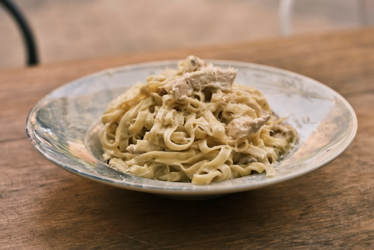

Description
This Fettuccine Alfredo with chicken is to die for. The creamy sauce smothering the al dente pasta is complemented so well by the delicious juicy chicken breasts. It's a go-to that never gets old. You need to try this recipe out for yourself!
Ingredients
For the Noodles
- 16 oz dry fettuccine pasta
For the Chicken
- 1 pound boneless, skinless chicken breasts
- 1 teaspoon italian seasoning
- 3/4 teaspoon kosher salt
- 1/4 teaspoon black pepper
- 2 tablespoons extra-virgin olive oil
- 1 tablespoon butter
For the Sauce
- 1/2 cup butter, cut into smaller chunks or slices
- 2 cups heavy cream
- 1 clove garlic, minced
- 3/4 teaspoon italian seasoning
- 1/4 teaspoon salt
- 1/4 teaspoon black pepper
- 2 cups freshly grated parmesan cheese
Steps
- Make the Noodles: Bring a large pot of salted water to a boil. Add the fettuccine and cook until al dente, stirring occasionally. Reserve 1/2 cup of the pasta water for later use. Drain well and set aside.
- Make the Chicken: Season chicken breasts with your italian seasoning, salt and pepper.
- Warm the olive oil over medium-high heat in a large non-stick skillet. Once it's shimmering, swirl the pan to evenly distribute the oil and add the chicken. Leave it undisturbed for 5-7 minutes until the bottom is golden-brown. Flip over and add in 1 tablespoon of butter between your chicken breasts, picking up the pan and gently swirling it to distribute the butter. Continue cooking for another 5-7 minutes or until internal temperature reaches 165°F.
- Transfer the chicken to a cutting board and let rest for 3 minutes. Cut into 1/2 inch thick slices. Cover with foil while you prepare the sauce.
- Make the Alfredo sauce: In the same pan over medium-high heat, add the butter and cream. Whisk until the butter is fully melted.
- Add in the minced garlic, seasonings, salt and pepper and whisk until combined and smooth.
- Bring to a gentle simmer (not boil) and cook for 3-4 minutes, whisking gently, until the sauce thickens.
- Stir in the parmesan cheese just until it melts and the sauce is smooth. If the sauce ends up too thick, add in some of that reserved pasta water from earlier, a few tablespoons at a time.
- Assemble: Take the sauce off the heat and immediately toss with the fettuccine.
- Serve your fettuccine alfredo in pasta bowls topped with your sliced chicken breasts. Garnish with parsley, additional parmesan, or black pepper if desired.